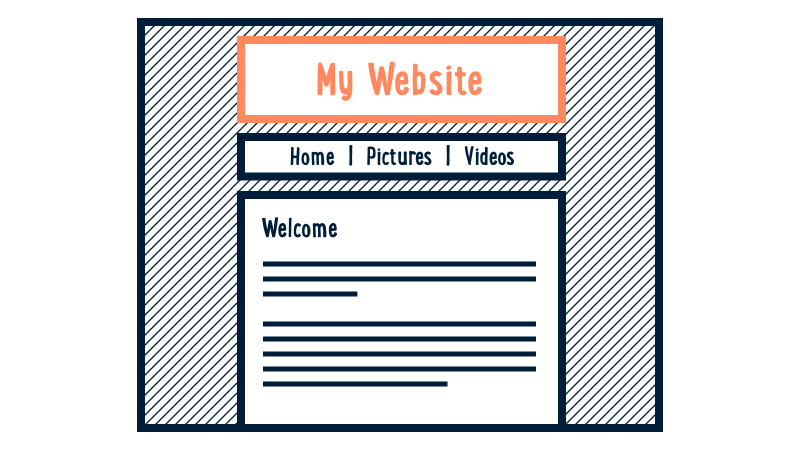

Custom Fonts
Customise your look with Google Fonts
We can use the header element as a container for our title and navigation.
Start by adding the header HTML with a title:
<header>
<h1>Logo Here</h1>
</header>

Adding a header to your page
Add to index.html, between the body tags:
<body>
<!-- My HTML Code Goes Here-->
<header class="page-header">
<h1>My Awesome Website</h1>
</header>
</body>
You should now see a heading on your page.
The header box will be invisible until you add CSS.
Add to your style.css:
.page-header {
background-color: #222222;
color: #FFFFFF;
padding: 20px;
}
This code will give your header a dark grey background,
white text and 20px of spacing around the inside edge.
Take a few minutes to make your header
look how you want it.
Add some style to our header container.
header {
background-color: #222222;
color: #FFFFFF;
padding: 20px;
}
Google Fonts
For a simple logo design, we can start by choosing a nice font from Google Fonts then clicking the “Quick Use” button.

Adding the font to your site
On the “Quick Use” page, look for step 3.

Copy that piece of HTML code
and put it between your site’s <head> tags.
It should go on the line before the link to your own stylesheet.
Using the font in your CSS
Further down the “Quick Use” page you’ll find step 4.

This is an example of the CSS you can now use to apply the font to elements on your page.
In our case, we’ll be adding the font to our <h1> element.
h1 {
font-family: 'Pacifico', cursive;
}
Make sure to use your own font’s name instead of “Pacifico”!
Title Design
Once our font is decided, we can tweak some other options:
h1 {
font-family: 'Pacifico', cursive;
margin: 0;
font-size: 40px;
color: #FFFFFF;
}